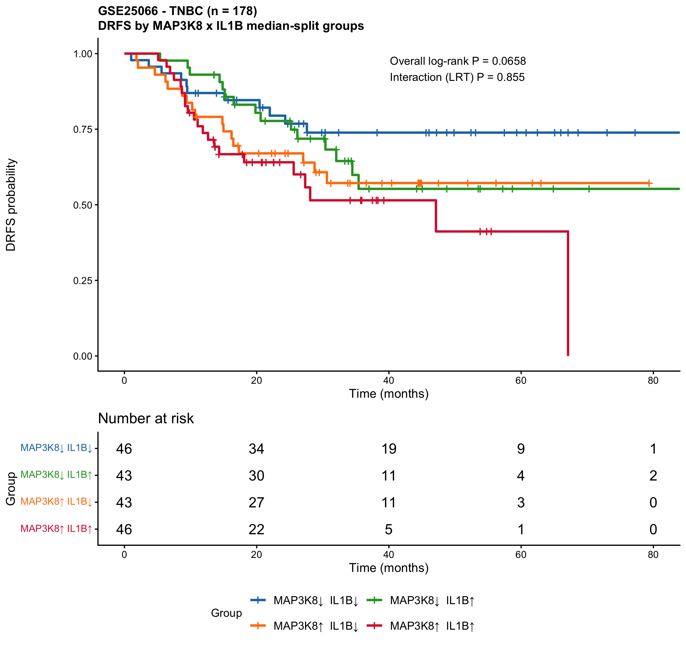
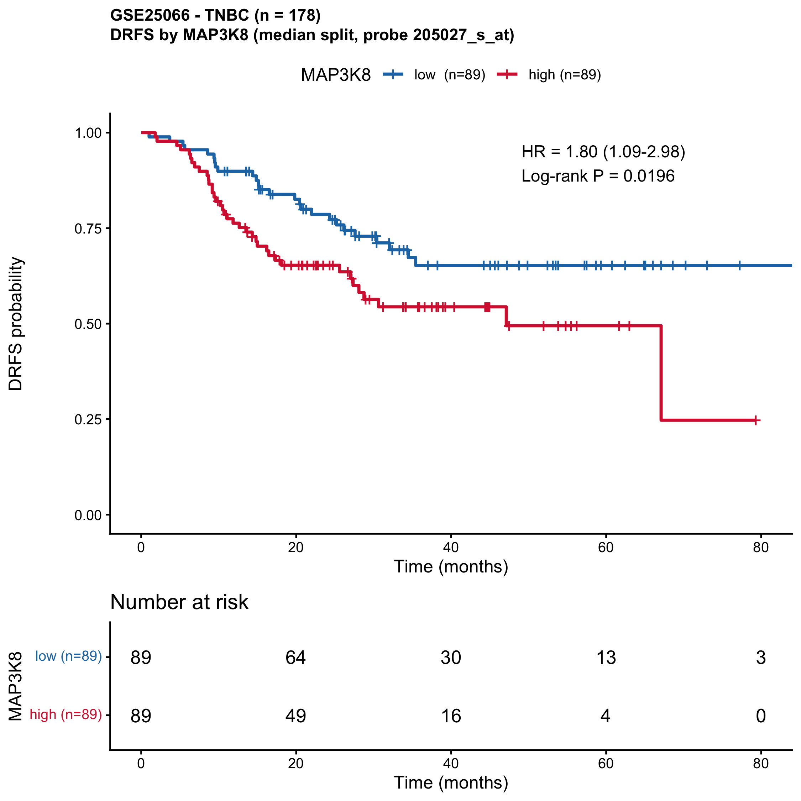
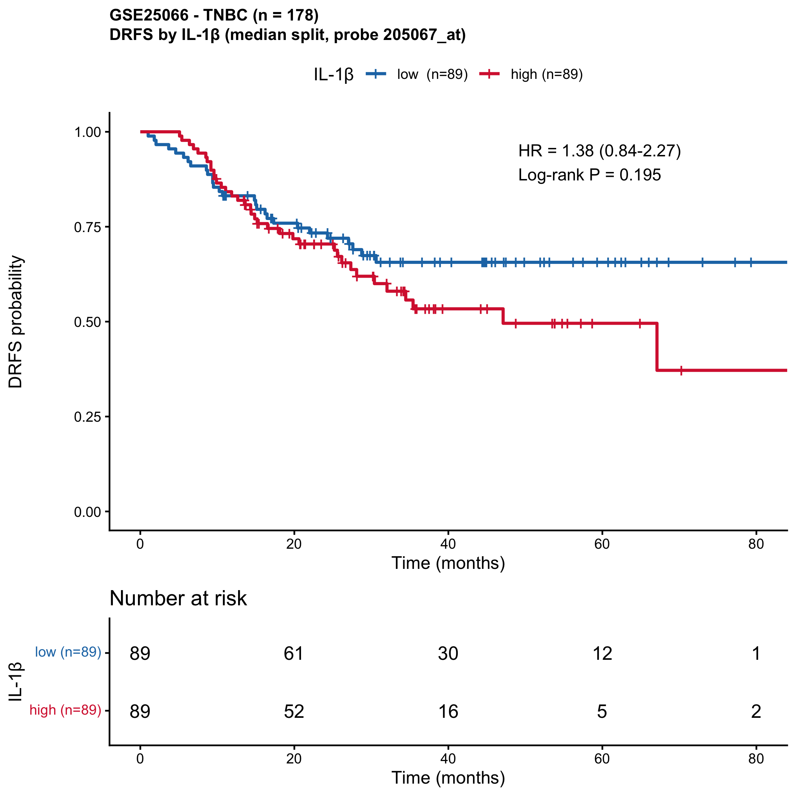

Rupa Guha, Ph.D.
About
Translational oncology scientist with over a decade of combined industry and academic experience driving antibody and small-molecule programs from target validation through IND clearance. Hands-on across in vivo pharmacology, biomarker strategy and preclinical package development for first-in-human filings.
Industry track record spans biomarker strategy and in vivo pharmacology for bispecific antibody programs at Hengenix (Henlius US), immunogenicity and immune-monitoring assays as a Staff Scientist at the CRO ABL Inc., and IND-enabling pharmacology and toxicology across multiple drug-discovery programs at Piramal Life Sciences and Sun Pharma. Doctoral research at the University of Maryland in collaboration with A&G Pharmaceutical generated the preclinical efficacy and mechanistic data package that supported FDA IND clearance for AG01, a first-in-class anti-progranulin antibody currently in Phase I for advanced solid tumors (NCT05627960). Co-inventor on U.S. Patent 9,498,507 B2.
Experience
Investigating mechanisms of therapeutic resistance in triple-negative breast cancer using 14 engineered cell-line models, focused on MAP3K8-driven stress-adaptive signalling within the RAS-RAF-MEK-ERK axis. Characterising small-molecule and PROTAC degraders of MAP3K8, dissecting its IL-1β-mediated transcriptional control, and integrating R-based bioinformatics with functional in vitro validation. Also screening drug combinations in BRAFV600E and KRASG12C colorectal models to identify clinically actionable resistance nodes.
Directed translational biomarker strategy for two bispecific antibody candidates entering a Phase I immuno-oncology program, embedding pharmacodynamic endpoints into the clinical protocol. Designed and executed humanised tumour-model efficacy studies generating dose-response and PK/PD data that informed lead-candidate prioritisation and go/no-go decisions, and authored regulatory-aligned preclinical study summaries for IND.
Led development, optimisation and qualification of immunogenicity and functional immune assays (immune-cell co-culture, cytokine release, ELISpot/FluoroSpot, multi-parameter flow cytometry) supporting IND submissions across oncology and viral-vaccine programs. Served as the scientific liaison to 4+ sponsor companies, aligning bioanalytical assay design and validation strategy with FDA and GLP expectations. Achieved a 98% on-time study completion rate; contributed to a successful NIH grant proposal for a vaccine development study.
Validated GP88 / progranulin as a therapeutic target in TNBC and characterised the multi-pathway mechanism of action for the anti-progranulin antibody AG01 using in vivo models (xenograft, metastasis), oncology protein arrays and molecular profiling. Doctoral data package directly supported FDA IND clearance for AG01, now in Phase I for advanced solid tumors (NCT05627960). Also showed AG01 resensitised endocrine-resistant ER+ breast cancer cells to aromatase inhibitor therapy, broadening the therapeutic potential beyond TNBC. First-author publication in Breast Cancer Research and Treatment (2021); presented at AACR, SABCS and UMGCCC.
Conducted IND-enabling in vivo pharmacology, GLP toxicology and genotoxicity studies across rodent and non-rodent models for multiple small-molecule drug-discovery programs, contributing data to two U.S. IND submissions. Co-inventor on U.S. Patent 9,498,507 B2 for Viracure (PP-9706642), an antiviral therapeutic that completed a Phase II clinical trial (CTRI/2011/05/001706). Presented at ICAAC 2010 and 2012.
Featured projects
TNBC chemoresistance — MAP3K8 × IL-1β joint analysis
A self-contained, reproducible R pipeline that grew out of my UCSF postdoctoral work on MAP3K8-driven chemoresistance. It evaluates the joint behaviour of MAP3K8 and IL-1β as distant-relapse biomarkers in chemo-treated triple-negative breast cancer (GSE25066, n=178; with independent validation in GSE41998, n=140). Each analysis ships with auto-generated Methods.docx outputs containing embedded figures, statistics, interpretation and limitations — so the analysis and publishable methods stay in sync run after run.

Four-group MAP3K8 × IL-1β median-split DRFS Kaplan-Meier in GSE25066 TNBC (n=178). Doubly-high tumours carry the highest distant-relapse risk; effects are additive (interaction LRT P = 0.86).
MAP3K8 distant-relapse Kaplan-Meier in chemo-treated TNBC
Single-gene survival readout for MAP3K8 in the GSE25066 neoadjuvant anthracycline-taxane TNBC cohort (n=178). Median split of probe 205027_s_at; reported as HR for high vs low (low = reference). Used as the prognostic baseline against which the joint MAP3K8 × IL-1β model is built.

MAP3K8-high vs MAP3K8-low DRFS in GSE25066 TNBC.
IL-1β distant-relapse Kaplan-Meier in chemo-treated TNBC
Companion single-gene readout for IL-1β in the same cohort. Median split on the higher-mean GPL96 probe; reports HR for high vs low. Visualises the late-relapse signal — curves intertwine in the first ~20 months and only separate afterwards, consistent with IL-1β's time-varying hazard (Schoenfeld P = 0.022 in the multivariable Cox model).

IL-1β-high vs IL-1β-low DRFS in GSE25066 TNBC.
Core competencies
Get in touch
Open to translational oncology, preclinical drug discovery and biomarker scientist roles (full-time or contract), based in the San Francisco Bay Area — no sponsorship required.
Email: rupa.guha.umb@gmail.com